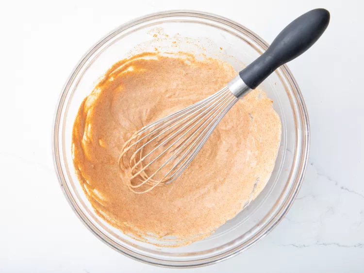
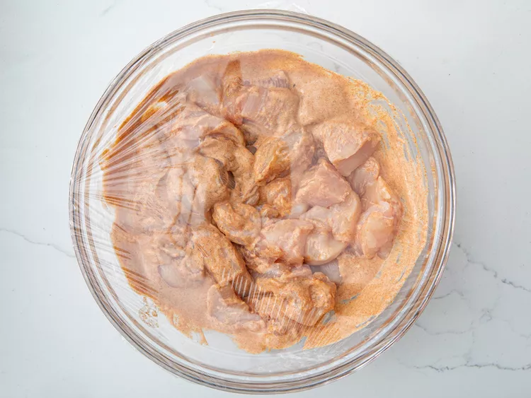
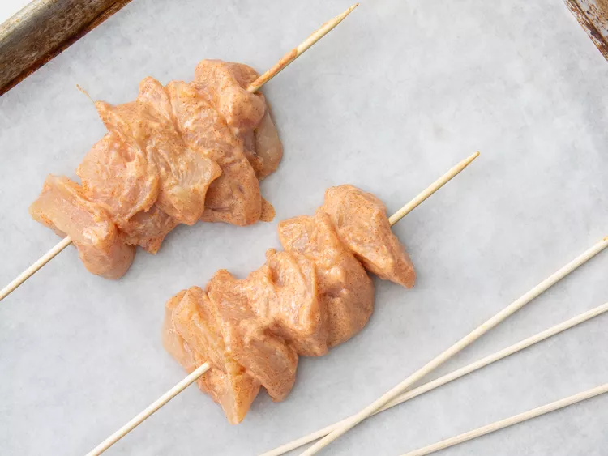
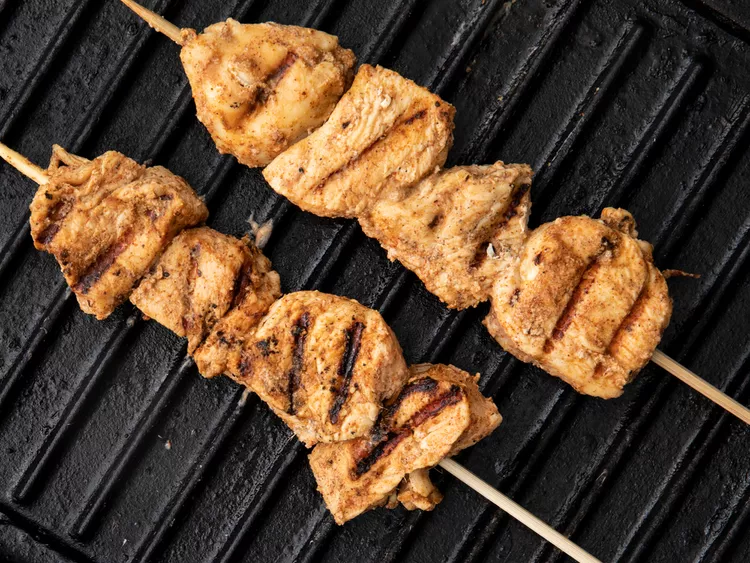
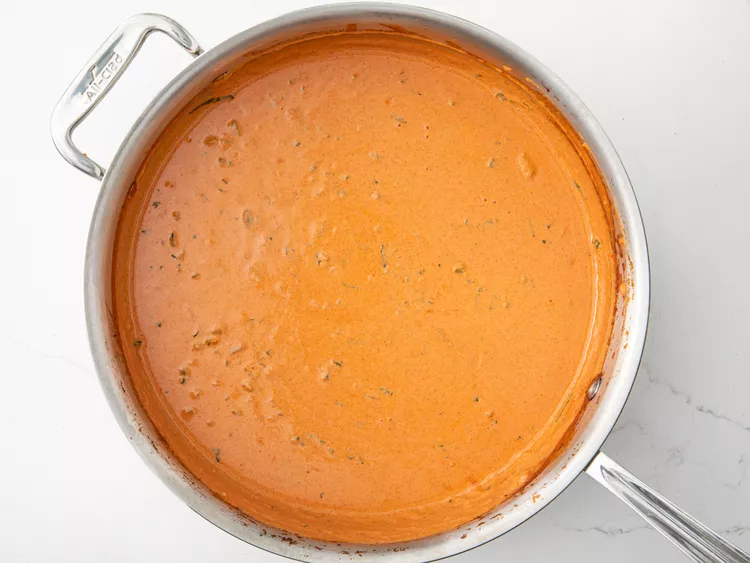
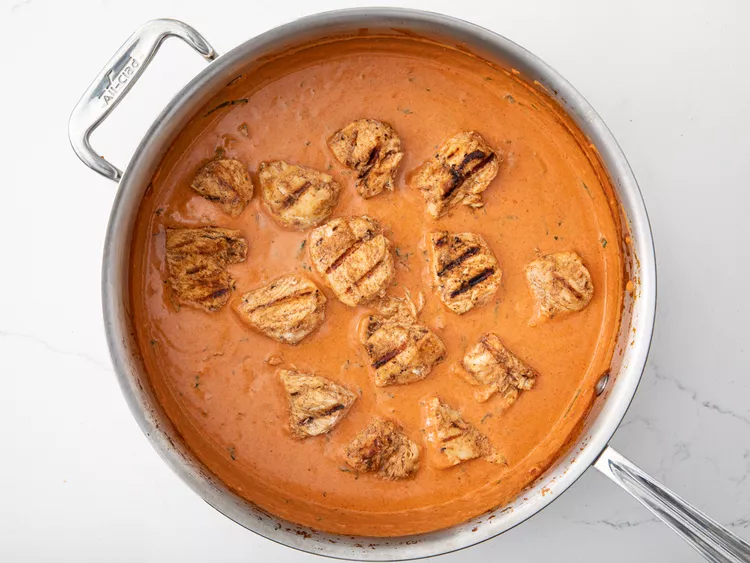

Chicken Tikka Masala

Chicken tikka masala made easy with this great-tasting recipe — simply marinate chicken breast in yogurt and spices and then simmer in a tomato cream sauce. Serve with rice or warm pita bread.
Combine yogurt, lemon juice, 2 teaspoons cumin, cinnamon, cayenne, black pepper, ginger, and 1 teaspoon salt in a large bowl.
Stir in chicken, cover, and refrigerate for 1 hour.
Preheat a grill for high heat.
Lightly oil the grill grate. Thread chicken onto skewers, and discard marinade.
Grill until juices run clear, about 5 minutes on each side.
Melt butter in a large heavy skillet over medium heat. Sauté garlic and jalapeño for 1 minute. Season with remaining 2 teaspoons cumin, paprika, and remaining 1 teaspoon salt. Stir in tomato sauce and cream. Simmer on low heat until sauce thickens, about 20 minutes.
Add grilled chicken, and simmer for 10 minutes. Transfer to a serving platter, and garnish with fresh cilantro.
Serve over rice.